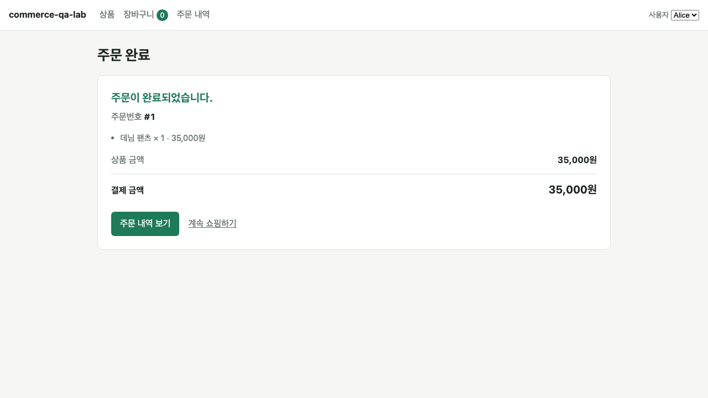
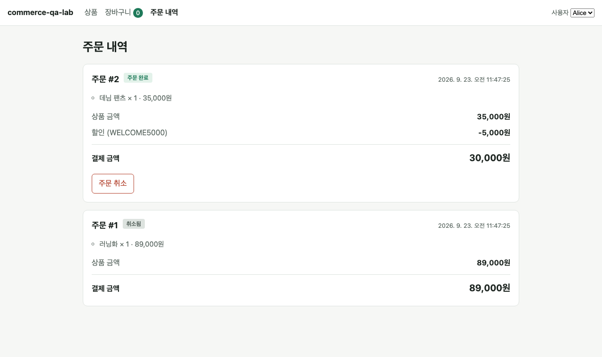
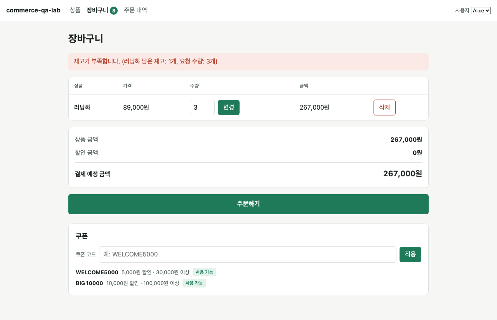

쇼핑몰이 처음부터 끝까지 동작합니다. 상품을 담아 주문하면 재고가 줄고, 주문을 취소하면 재고와 쿠폰이 원래대로 복구됩니다.



주문 한 번에는 여러 가지 일이 동시에 일어납니다.
이 다섯 가지는 하나로 묶여 있습니다. 중간에 하나라도 실패하면 앞의 것까지 전부 없던 일이 됩니다. 이런 처리를 트랜잭션이라고 합니다. 이게 없으면 "재고는 줄었는데 주문은 없는" 유령 상태가 생깁니다. 실무에서 가장 골치 아픈 종류의 버그입니다.
취소도 똑같이 묶여 있습니다. 재고 복구 + 쿠폰 복구 + 상태 변경이 한 덩어리입니다.
| 상황 | 결과 | 함께 확인한 뒷정리 |
|---|---|---|
| 데님 팬츠 2개 주문 | 주문 완료 | 재고 5 → 3, 장바구니 비워짐 |
| 쿠폰 쓴 주문 | 35,000 → 30,000원 | 쿠폰이 사용 완료로 바뀜 |
| 이미 쓴 쿠폰으로 다시 주문 | 거절 | 재고·장바구니 그대로, 주문 생기지 않음 |
| 담아 둔 사이 다른 손님이 먼저 구매 | 거절 · 재고 부족 | 재고·쿠폰·장바구니 모두 그대로 |
| 여러 상품 중 하나만 재고 부족 | 주문 전체 거절 | 부족하지 않던 상품의 재고도 그대로 |
| 빈 장바구니로 주문 | 거절 | — |
| 주문 취소 | 상태가 취소됨으로 | 재고 복구, 쿠폰 다시 사용 가능 |
| 같은 주문을 두 번 취소 | 거절 · 이미 취소된 주문 | 재고가 두 번 늘지 않음 |
| 없는 주문 / 남의 주문 취소 | 거절 · 주문을 찾을 수 없음 | 남의 주문 상태와 재고 변화 없음 |
주문에는 상품의 그때 이름과 가격을 함께 저장합니다. 나중에 가격이 바뀌어도 이미 한 주문의 금액은 변하지 않습니다. 실제로 가격을 바꿔 보고 확인했습니다.
브라우저 확인은 Phase 6에서 만들 E2E 시나리오의 예행으로 진행했습니다. 모두 3번 연속 통과했습니다.
| 시나리오 | 확인한 내용 |
|---|---|
| E2E-001 | 상품 담기 → 장바구니 → 주문 → 주문번호와 금액 확인, 장바구니 비워짐, 재고 5 → 4 |
| E2E-002 | 쿠폰 적용 → 할인 5,000원 → 주문 → 최종 결제 30,000원, 쿠폰이 사용 완료로 바뀜 |
| E2E-003 | 재고 3 확인 → 주문 → 재고 2 확인 → 취소 → 재고 3 복구, 취소 버튼 사라짐 |
| E2E-004 | 재고보다 많이 담기 거절 + 담아 둔 사이 품절되면 주문 거절, 주문 내역 생기지 않음 |
주문 취소에서 재고 복구만 빼고 코드를 일부러 망가뜨린 뒤 검사를 돌렸습니다.
특히 "두 번 취소해도 재고가 두 번 늘지 않는다"를 확인하는 검사가 함께 실패했습니다. 이런 검사는 "취소가 됐다"만 보는 검사로는 절대 잡을 수 없습니다. 결과가 아니라 결과의 뒷정리까지 확인해야 하는 이유입니다.
Phase 3에서 고쳤던 것과 같은 종류의 문제가 다른 스크립트에 남아 있었습니다. 손님을 바꾸면 화면이 스스로 새로고침되는데, 그 직후 바로 다음 페이지로 이동하면 가끔 충돌합니다. 앱의 버그는 아니지만, 이렇게 10번에 1번쯤 실패하는 검사가 자동화를 신뢰할 수 없게 만듭니다.
고친 방법: "사용자 선택이 실제로 바뀔 때까지 기다리기"라는 조건을 넣었습니다. 이후 3번 연속 + 추가 5번 실행에서 재현되지 않았습니다.
배운 점: 한 곳에서 고친 문제는 같은 패턴이 다른 곳에도 있는지 찾아봐야 합니다. Phase 6에서 정식 E2E를 만들 때 이 대기 조건을 공통으로 넣겠습니다.